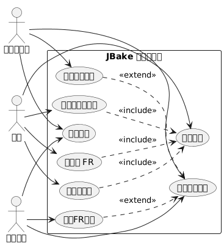
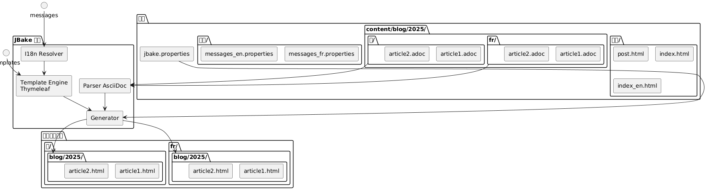
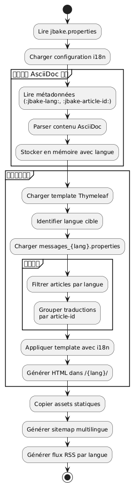

使用 Thymeleaf 的 JBake 静态站点国际化
Publié le 20 October 2025
介�绍
静态网站的国际化（i18n）乍看起来可能很复杂，但JBake结合Thymeleaf提供了创建多语言站点的优雅解决方案。在本文中，我将展示我如何在我的博客上实现i18n，涵盖模板和多语言文章管理。
用例图 (Use Case)

国际化架构
我们的方法基于两个支柱：
-
模板的国际化: 使用 Thymeleaf 消息文件用于界面元素
-
内容的 i18n按语言组织文章，放置在专用的文件夹结构中
结构图（文件组织）

为什么采用这种方法？
这种分离可以：
-
保持界面一致性，无论语言如何
-
独立管理文章的内容和翻译
-
简化添加新语言，无需进行大规模重构
-
允许仅在特定语言中可用的文章
组件图

Thymeleaf 模板国际化
消息文件的结构
第一步是为每种支持的语言创建属性文件：
src/jbake/templates/
├── messages.properties # Fallback par défaut
├── messages_fr.properties # Français
├── messages_en.properties # Anglais
└── messages_de.properties # Allemand消息文件的内容
这是一个文件示例`messages_fr.properties`:
# Navigation
nav.home=Accueil
nav.blog=Blog
nav.about=À propos
nav.contact=Contact
# Articles
article.readmore=Lire la suite
article.published=Publié le
article.tags=Étiquettes
article.also.available=Également disponible en
# Interface
site.title=Mon Blog Technique
site.description=Partage de connaissances et expériences
footer.copyright=© 2025 Tous droits réservés
search.placeholder=Rechercher un article...以及其英语等价`messages_en.properties`：
# Navigation
nav.home=Home
nav.blog=Blog
nav.about=About
nav.contact=Contact
# Articles
article.readmore=Read more
article.published=Published on
article.tags=Tags
article.also.available=Also available in
# Interface
site.title=My Tech Blog
site.description=Sharing knowledge and experiences
footer.copyright=© 2025 All rights reserved
search.placeholder=Search articles...在模板中使用
在您的Thymeleaf模板中，使用语法`#{}`要访问消息 :
<!DOCTYPE html>
<html xmlns:th="http://www.thymeleaf.org">
<head>
<title th:text="#{site.title}">Mon Blog</title>
<meta name="description" th:content="#{site.description}" />
</head>
<body>
<nav>
<a th:href="@{/}" th:text="#{nav.home}">Accueil</a>
<a th:href="@{/blog/}" th:text="#{nav.blog}">Blog</a>
<a th:href="@{/about.html}" th:text="#{nav.about}">À propos</a>
</nav>
<footer>
<p th:text="#{footer.copyright}">Copyright</p>
</footer>
</body>
</html>时序图 - 国际化解决方案
Failed to generate image: PlantUML preprocessing failed: [From <input> (line 4) ]
@startuml
actor Auteur
participant JBake
participant "AsciiDoc
^^^^^
Syntax Error? (Assumed diagram type: sequence)
@startuml
actor Auteur
participant JBake
participant "AsciiDoc
解析器" as parser
participant "Thymeleaf\n引擎" as thymeleaf
participant "I18n
解析器" as i18n
database "messages_*.properties" as messages
Auteur -> JBake: jbake -b
activate JBake
JBake -> parser: Lire article.fr.adoc
activate parser
parser --> JBake: Contenu + métadonnées\n(lang=fr, article-id=xyz)
deactivate parser
JBake -> parser: Lire article.en.adoc
activate parser
parser --> JBake: Contenu + métadonnées\n(lang=en, article-id=xyz)
deactivate parser
JBake -> thymeleaf: Générer page FR
activate thymeleaf
thymeleaf -> i18n: Résoudre #{nav.home}
activate i18n
i18n -> messages: Lire messages_fr.properties
messages --> i18n: "首页"
i18n --> thymeleaf: "首页"
deactivate i18n
thymeleaf -> JBake: Rechercher traductions\n(article-id=xyz, lang!=fr)
JBake --> thymeleaf: article.en.html trouvé
thymeleaf --> JBake: /fr/blog/article.html
deactivate thymeleaf
JBake -> thymeleaf: Générer page EN
activate thymeleaf
thymeleaf -> i18n: Résoudre #{nav.home}
activate i18n
i18n -> messages: Lire messages_en.properties
messages --> i18n: "首页"
i18n --> thymeleaf: "首页"
deactivate i18n
thymeleaf -> JBake: Rechercher traductions\n(article-id=xyz, lang!=en)
JBake --> thymeleaf: article.fr.html trouvé
thymeleaf --> JBake: /en/blog/article.html
deactivate thymeleaf
JBake --> Auteur: Site généré
deactivate JBake
@enduml
JBake 的语言环境配置
在您的文件中`jbake.properties`, 设置默认语言环境 :
# Locale par défaut
thymeleaf.locale=fr
# Encodage
template.encoding=UTF-8文章国际化：按文件夹组织
流程图 (Flow) - 生成

文件夹结构
与其在文件名中使用后缀，我选择了按文件夹组织的方式，这样更清晰且易于维护：
content/blog/
├── 2024/
│ ├── fr/
│ │ ├── introduction-jbake.adoc
│ │ ├── guide-thymeleaf.adoc
│ │ └── astuces-asciidoc.adoc
│ └── en/
│ ├── introduction-jbake.adoc
│ ├── thymeleaf-guide.adoc
│ └── asciidoc-tips.adoc
└── 2025/
├── fr/
│ └── internationalisation-jbake.adoc
└── en/
└── jbake-internationalization.adoc这种方法的优势
这种结构具有多个优势：
-
清晰的分离: 每种语言都有自己的空间
-
灵活命名: 文件可以根据语言具有不同的名称
-
可扩展性: 容易添加一种新语言
-
自然组织: 遵循 JBake 的时间逻辑
文章的元数据
每篇文章都必须包含元数据以允许翻译之间的链接。以下是一个示例：
法文版(2025/fr/internationalisation-jbake.adoc) :
= Internationalisation d'un site statique JBake
:jbake-type: post
:jbake-status: published
:jbake-date: 2025-10-20
:jbake-lang: fr
:jbake-article-id: jbake-i18n-thymeleaf
:jbake-tags: jbake, thymeleaf, i18n
:jbake-description: Guide pour mettre en place l'i18n avec JBake英文版本(2025/en/jbake-internationalization.adoc) :
= Internationalizing a JBake Static Site
:jbake-type: post
:jbake-status: published
:jbake-date: 2025-10-20
:jbake-lang: en
:jbake-article-id: jbake-i18n-thymeleaf
:jbake-tags: jbake, thymeleaf, i18n
:jbake-description: Guide to implement i18n with JBake注意：该属性`:jbake-article-id:`至关重要：它能够将同一篇文章的不同译文关联起来。
URL 配置
在`jbake.properties`, 配置 URL 模式以包含语言 :
# Pattern d'URL avec langue
post.permalink.pattern=:lang/blog/:year/:name.html
# Langue par défaut
site.default.lang=fr这将生成如下形式的 URL：
-
/fr/blog/2025/internationalisation-jbake.html -
/en/blog/2025/jbake-internationalization.html
多语言显示模板
带有语言选择器的文章模板
创建一个模板`post.html`显示可用翻译：
<!DOCTYPE html>
<html xmlns:th="http://www.thymeleaf.org">
<head>
<title th:text="${content.title}">Article</title>
</head>
<body>
<article>
<header>
<h1 th:text="${content.title}">Titre</h1>
<div class="article-meta">
<time th:text="${#dates.format(content.date, 'dd MMMM yyyy')}"
th:attr="datetime=${#dates.format(content.date, 'yyyy-MM-dd')}">
Date
</time>
<!-- Sélecteur de traductions -->
<div class="translations" th:if="${content['article-id']}">
<span th:text="#{article.also.available}">Aussi disponible en :</span>
<ul class="language-list">
<li th:each="post : ${published_posts}"
th:if="${post['article-id'] == content['article-id'] and post.lang != content.lang}">
<a th:href="${post.uri}"
th:text="${post.lang.toUpperCase()}">
LANG
</a>
</li>
</ul>
</div>
</div>
</header>
<div class="content" th:utext="${content.body}">
Contenu de l'article
</div>
<footer class="article-footer">
<div class="tags" th:if="${content.tags}">
<span th:text="#{article.tags}">Étiquettes :</span>
<span th:each="tag : ${content.tags}">
<a th:href="@{/tags/{tag}.html(tag=${tag})}"
th:text="${tag}">tag</a>
</span>
</div>
</footer>
</article>
</body>
</html>按语言过滤的索引
为每种语言创建索引模板：
index.html(法文索引) :
<!DOCTYPE html>
<html xmlns:th="http://www.thymeleaf.org">
<head>
<title th:text="#{site.title}">Mon Blog</title>
</head>
<body>
<main>
<h1 th:text="#{nav.blog}">Blog</h1>
<div class="articles-list">
<article th:each="post : ${published_posts}"
th:if="${post.lang == 'fr'}">
<h2>
<a th:href="${post.uri}" th:text="${post.title}">Titre</a>
</h2>
<time th:text="${#dates.format(post.date, 'dd MMMM yyyy')}">
Date
</time>
<p th:text="${post.description}">Description</p>
<a th:href="${post.uri}" th:text="#{article.readmore}">
Lire la suite
</a>
</article>
</div>
</main>
</body>
</html>index_en.html(英文索引) :
<!DOCTYPE html>
<html xmlns:th="http://www.thymeleaf.org">
<head>
<title th:text="#{site.title}">My Blog</title>
</head>
<body>
<main>
<h1 th:text="#{nav.blog}">Blog</h1>
<div class="articles-list">
<article th:each="post : ${published_posts}"
th:if="${post.lang == 'en'}">
<h2>
<a th:href="${post.uri}" th:text="${post.title}">Title</a>
</h2>
<time th:text="${#dates.format(post.date, 'dd MMMM yyyy')}">
Date
</time>
<p th:text="${post.description}">Description</p>
<a th:href="${post.uri}" th:text="#{article.readmore}">
Read more
</a>
</article>
</div>
</main>
</body>
</html>语言之间的导航
全局语言选择器
流程图 - 用户读取

在你的主模板中添加语言选择器：
<nav class="language-switcher">
<a href="/index.html"
th:classappend="${content.lang == 'fr'} ? 'active'"
title="Français">
🇫🇷 FR
</a>
<a href="/en/index.html"
th:classappend="${content.lang == 'en'} ? 'active'"
title="English">
🇬🇧 EN
</a>
</nav>选择器的 CSS 样式
.language-switcher {
display: flex;
gap: 1rem;
padding: 0.5rem;
background: #f5f5f5;
border-radius: 4px;
}
.language-switcher a {
padding: 0.5rem 1rem;
text-decoration: none;
color: #333;
border-radius: 4px;
transition: background 0.2s;
}
.language-switcher a:hover {
background: #e0e0e0;
}
.language-switcher a.active {
background: #007bff;
color: white;
}
.translations {
margin: 1rem 0;
padding: 1rem;
background: #f8f9fa;
border-left: 4px solid #007bff;
}
.language-list {
display: inline-flex;
gap: 0.5rem;
list-style: none;
padding: 0;
margin: 0;
}
.language-list li::after {
content: "•";
margin-left: 0.5rem;
}
.language-list li:last-child::after {
content: "";
}按语言的 RSS 订阅
要获得按语言分离的 RSS 源，请创建单独的模板：
feed.xml(法语流) :
<?xml version="1.0" encoding="UTF-8"?>
<rss version="2.0" xmlns:th="http://www.thymeleaf.org">
<channel>
<title th:text="#{site.title}">Mon Blog</title>
<link th:text="${config.site_host}">http://example.com</link>
<description th:text="#{site.description}">Description</description>
<language>fr</language>
<item th:each="post : ${published_posts}"
th:if="${post.lang == 'fr'}">
<title th:text="${post.title}">Titre</title>
<link th:text="${config.site_host + post.uri}">Lien</link>
<pubDate th:text="${#dates.format(post.date, 'EEE, dd MMM yyyy HH:mm:ss Z')}">
Date
</pubDate>
<description th:text="${post.description}">Description</description>
</item>
</channel>
</rss>良好实践和技巧
1. 文章标识符的一致性
请确保`:jbake-article-id:`对于同一文章的所有翻译都是相同的。 请使用一致的格式：
-
请使用英文标识符以实现通用性
-
使用短横线来分隔单词
-
避免使用特殊字符
2. 日期一致
一篇文章的所有翻译必须有相同的出版日期`:jbake-date:`). 这有助于排序和按时间顺序显示。
3. 多语言标签
对于标签，您有两种选择：
选项1：通用英文标签
:jbake-tags: java, spring-boot, microservices选项 2：使用映射翻译的标签
# Version française
:jbake-tags: java, spring-boot, microservices
# Version anglaise
:jbake-tags: java, spring-boot, microservices4. 未翻译项目的管理
不需要翻译所有文章。如果某篇文章只存在于一种语言中，它将不会出现在另一种语言的列表中。
5. 多语言站点地图
生成一个包含所有语言的站点地图：
<?xml version="1.0" encoding="UTF-8"?>
<urlset xmlns="http://www.sitemaps.org/schemas/sitemap/0.9"
xmlns:xhtml="http://www.w3.org/1999/xhtml"
xmlns:th="http://www.thymeleaf.org">
<url th:each="post : ${published_posts}">
<loc th:text="${config.site_host + post.uri}">URL</loc>
<lastmod th:text="${#dates.format(post.date, 'yyyy-MM-dd')}">Date</lastmod>
<!-- Liens alternatifs pour les traductions -->
<xhtml:link th:each="translation : ${published_posts}"
th:if="${translation['article-id'] == post['article-id'] and translation.lang != post.lang}"
rel="alternate"
th:attr="hreflang=${translation.lang},href=${config.site_host + translation.uri}" />
</url>
</urlset>结论
使用 Thymeleaf 对 JBake 站点进行国际化是一种健壮且可维护的方法。通过将 i18n 与模板分离（通过消息文件）以及将内容的 i18n 通过目录组织来分离，您可以获得一个灵活、易于演进的系统。
要点如下：
-
Thymeleaf 消息文件对于用户界面
-
按文件夹组织(年/语言) 用于文章
-
文章标识符用于链接翻译
-
专用模板对于每种语言
-
显式 URL包含语言代码
部署图
Failed to generate image: PlantUML preprocessing failed: [From <input> (line 15) ]
@startuml
node "开发机器" {
artifact "来源" {
folder "content/"
folder "模板/"
folder "资产/"
}
component "JBake 命令行界面" as jbake
Sources --> jbake : jbake -b
}
node "构建服务器\n(CI/CD)" {
component "GitHub Actions
^^^^^
Syntax Error? (Assumed diagram type: component)
@startuml
node "开发机器" {
artifact "来源" {
folder "content/"
folder "模板/"
folder "资产/"
}
component "JBake 命令行界面" as jbake
Sources --> jbake : jbake -b
}
node "构建服务器\n(CI/CD)" {
component "GitHub Actions
或 GitLab CI" as ci
jbake --> ci : push
}
cloud "CDN / 托管" {
node "静态Web服务器" {
artifact "已生成的网站" {
folder "/fr/blog/"
folder "/en/blog/"
folder "/assets/"
}
}
}
ci --> "已生成的网站" : déploiement
actor "读者" as users
users --> "静态Web服务器" : HTTPS
@enduml
这种架构让您可以简单地使用两种语言开始，并且可以在不进行大规模重构的情况下添加更多语言。整个系统保持完全静态且高性能，忠实于JBake的理念。
祝您多语言开发顺利！🌍